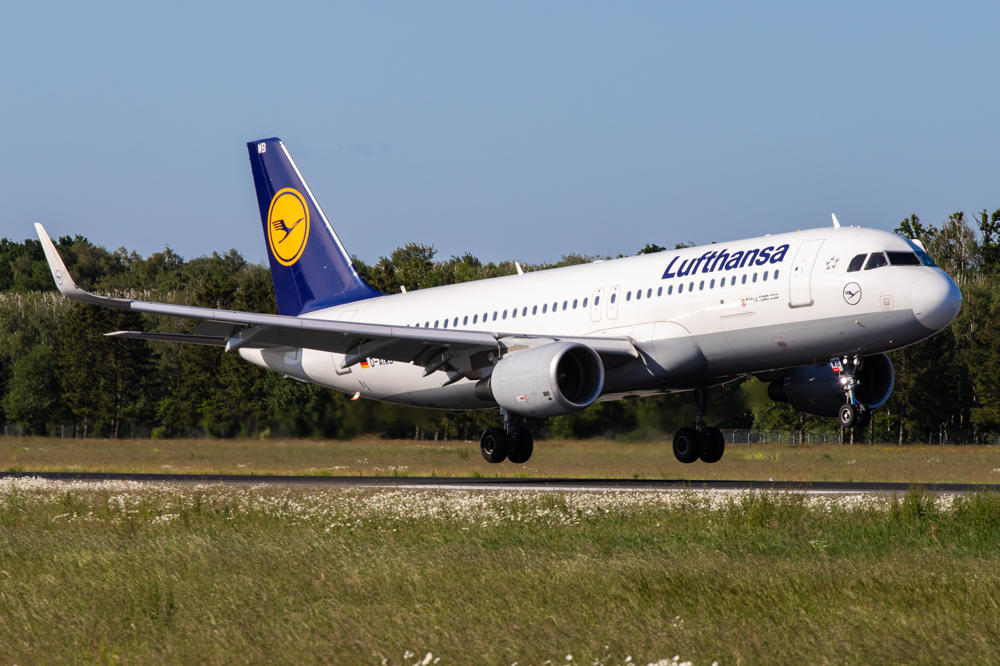

Lufthansa saved from bankruptcy / Shareholders approve German government's 9 billion euro plan - UPDATE
3 July 2020

Lufthansa shareholders have approved the 9 billion euro rescue plan presented by the German government to rescue the air giant after it was brought close to the collapse of the Covid-19 pandemic, Reuters reports.
UPDATE: The plan, supported by 98% of shareholders, stipulates that the German state will have 20% of the shares and two positions in the company's management.
"I will vote on the proposal," billionaire Heinz Hermann Thiele, who owns 15.5 percent of Lufthansa shares, said on Wednesday, according to the Frankfurter Allgemeine.
Great support
His support is a last-minute breath of fresh air for the airline after fears that Thiele could block the adoption of the rescue plan at the General Meeting of Shareholders to be held on Thursday afternoon.
Thiele benefited de facto from a veto vote as only 38% of Lufthansa shareholders had registered to vote in the GMS, the company's rules stipulating that in the presence of less than 50% a qualified two-thirds majority is required to approve such a measure. , which would have been impossible with opposition from the German billionaire.
The airline, severely affected by the crash of flights due to the COVID-19 pandemic, has previously warned that it may have to seek protection from creditors if the rescue plan from the German government does not get enough support from shareholders.
Thiele initially declined to say whether he would vote against the rescue package, saying he was dissatisfied with the plan to give the German state a 20% stake in the company and two board positions.
He said talks with the German executive on Monday did not dispel his doubts, saying "we still have differences with government officials", but said he could not cast a vote leading to Lufthansa's insolvency.